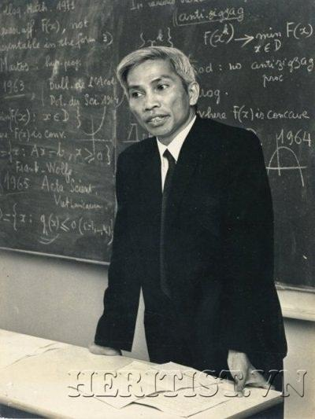

GS HOÀNG TỤY (1927 - 2019)Là một trong hai người sáng lập ngành Toán học Việt Nam. Ông nguyên là Chủ nhiệm khoa Toán Đại học Tổng hợp Hà Nội từ năm 1961 đến năm 1968. Ông giữ chức Viện trưởng Viện Toán học từ năm 1980 đến năm 1989.

HOÀNG TỤY
(1927-2019)
Giáo sư Hoàng Tụy giảng dạy tại CHDC Đức, 1964.
GS Hoàng Tụy được coi là chuyên gia hàng đầu về vận trù học trên thế giới. Năm 1964, ông phát minh ra phương pháp “lát cắt Tụy”, đánh dấu sự ra đời của một chuyên ngành Toán học mới: Lý thuyết tối ưu toàn cục.